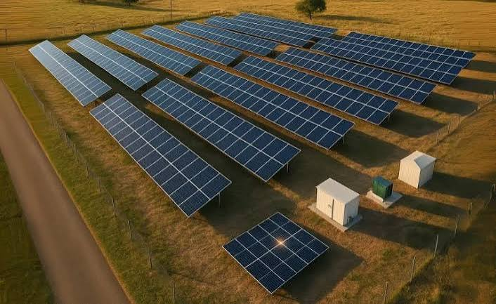
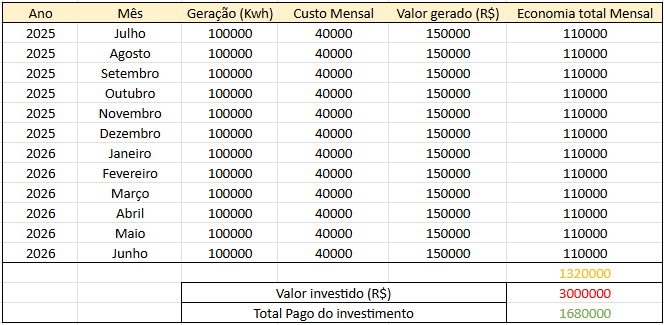

Usina Z

Informações da Usina
Localização: Carlos Chagas - MG
Capacidade instalada: 2500 kWp
Investimento: R$ 3.000.000,00
Economia mensal estimada: R$ 100.000,00
Período analisado: julho de 2025 a junho de 2026
Dados de geração e economia
Abaixo estão os dados de geração da Usina Z referentes ao período de julho de 2025 a junho de 2026, incluindo geração de energia, custo mensal, valor gerado e economia total mensal.

Retorno do investimento
Os dados apresentados na planilha também permitem acompanhar a relação entre o valor investido na Usina Z e o valor acumulado já recuperado por meio da geração de energia.
O acompanhamento do retorno do investimento permite observar a evolução da recuperação do valor aplicado na implantação da usina ao longo do período analisado.